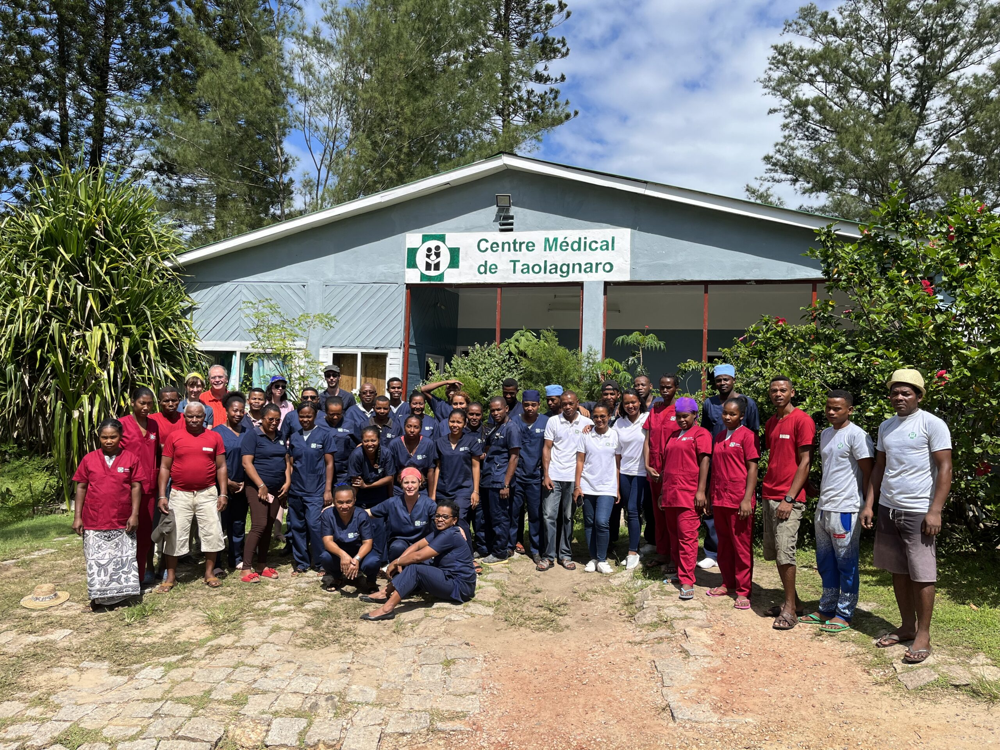

Centre Medical de Taolagnaro
Das Centre Medical de Taolagnaro ist unser wichtigster Partner in der Region Fort-Dauphin und bietet medizinische Grundversorgung für tausende Patienten jährlich.
Melzer-Madagaskar-Projekt e.V. ist eine gemeinnützige, spendenfinanzierte und unabhängige Initiative aus Deutschland. Wir setzen uns dafür ein, die medizinische Versorgung der Menschen im Süden Madagaskars zu verbessern – unabhängig von Einkommen, Wohnort oder Infrastruktur.
Als ehrenamtlich geführter Verein arbeiten wir mit lokalen Partner:innen zusammen, um grundlegende medizinische Versorgung zu stärken – verlässlich, transparent und auf Augenhöhe.
Unsere Arbeit fokussiert sich auf Primärversorgung, Prävention und die Stärkung lokaler Strukturen in ländlichen Regionen, die besonders von Dürre, Armut und langen Wegen zur nächsten Gesundheitseinrichtung betroffen sind.
Ihre Spende hilft, medizinisches Material zu beschaffen, mobile Einsätze zu finanzieren und lokale Teams zu stärken. Als gemeinnütziger Verein stellen wir auf Wunsch eine Spendenbescheinigung aus.
Schreiben Sie uns gern bei Fragen, Projektideen oder wenn Sie als Unternehmen/Organisation kooperieren möchten.
E‑Mail: info@melzer-madagaskar-projekt.de
Vereinsvorsitzender: Dr. Sebastian Melzer
Adresse: Gartenweg 9, 06712 Gutenborn OT Rippicha
Eingetragen im Vereinsregister Amtsgericht Gera VR 1385 als Melzer- Madagaskar- Pojekt e.V.